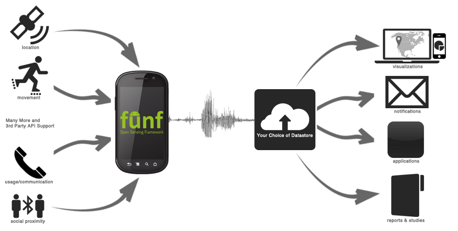

The Funf Open Sensing Framework is an extensible sensing and data processing framework for mobile devices, supported and maintained by Behavio. The core concept is to provide an open source, reusable set of functionalities, enabling the collection, uploading, and configuration of a wide range of data signals accessible via mobile phones.

Who is Funf for?
API-Level Developers
Develop Android applications that leverage the capabilities and services of the Funf framework through its 3rd-party developer API, without the need to go into the Funf internals.
Save time and focus on your app while Funf takes care of logging and uploading proprietary app data and generic phone-sensor data.
Study Managers/Researchers
Use Funf as a ready-made platform for conducting data collection experiments ranging from health and wellness, social and psychological studies, tracing tracing what apps users are running on their phones, or testing the battery effects of your Android app.
Install Funf as a pre-compiled app on the phones you want to test. Set up the data-collection back-end server, remotely configure the desired sensors and data collection behavior, and set up optional components like user surveys.
Core-Level Developers
Go under the hood and use features that are outside the scope of the 3rd-party API.
Leverage the Funf framework's modular architecture and implemented features to focus on the new innovations that you care about.
Contribute new features and capabilities to the framework. Add new sensor probes and improve performance of existing ones.
Self-Trackers
Use Funf Journal as a pre-compiled app and configure the sensors and data collection parameters to your desire. Then analyze the data directly or input to your favorite Quantified Self data-store or analyiss app.
Key features include:
- Remote configuration.
- Many built-in data "probes" (see below).
- Automatic or manual data upload.
- Delay tolerant implementation - When internet connection is not available, caches data locally until server connection is restored.
- One-way hashing and encryption for sensitive data: Does not save any textual data or phone numbers in human-readable format.
- Encryption of locally stored database files.
- 3rd-party data input API allowing any app to leverage the Funf framework for collecting and storing arbitrary app data.
- Modular probe architecture allows for adding core data probes and modifying existing probe behavior.
- Basic survey system for manual data collection.
- Various optimizations for prolongig battery life and dealing with everyday use-cases (e.g. when SD card is not available because user is copying music files to it)
- Field proven - Deployed for over 15 months with over 100 users in an MIT living laboratory experiment.